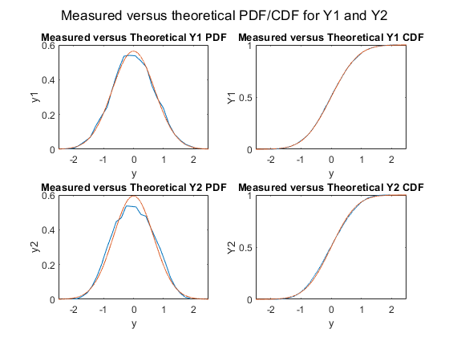
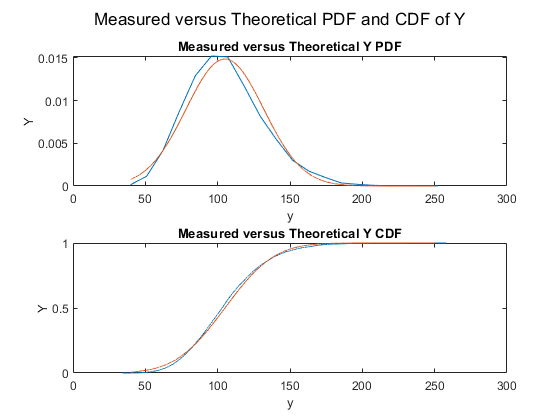
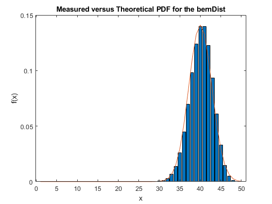

ECE 384 Project 6.1
Contents
Tyler Botelho, Lewis Brum, Matt LaVoie, Dylan Tocci
clear;clc; close all;
X1 = unifrnd(-0.5,0.5,[1 10000]);
X2 = unifrnd(-0.5,0.5,[1 10000]);
X3 = unifrnd(-0.5,0.5,[1 10000]);
X4 = unifrnd(-0.5,0.5,[1 10000]);
X5 = unifrnd(-0.5,0.5,[1 10000]);
X6 = unifrnd(-0.5,0.5,[1 10000]);
Y1 = X1+X2+X3+X4+X5+X6;
Y2 = X1 + (0.5.*X2) + (0.8.*X3) + (1.8.*X4) + (0.3.*X5) + (0.5.*X6);
[PDY1,CDY1,pY1Range, cY1Range] = PdfCdf(Y1,25);
[PDY2,CDY2,pY2Range, cY2Range] = PdfCdf(Y2,25);
sgtitle("Measured versus theoretical PDF/CDF for Y1 and Y2")
figure(1);
subplot(2,2,1)
plot(pY1Range, PDY1);
title("Measured versus Theoretical Y1 PDF")
xlabel("y");
ylabel("y1");
xlim([-2.5,2.5])
subplot(2,2,2)
plot(cY1Range,CDY1);
title("Measured versus Theoretical Y1 CDF")
xlabel("y");
ylabel("Y1");
xlim([-2.5,2.5])
subplot(2,2,3)
plot(pY2Range,PDY2);
title("Measured versus Theoretical Y2 PDF")
xlabel("y");
ylabel("y2");
xlim([-2.5,2.5])
subplot(2,2,4)
plot(cY2Range,CDY2);
title("Measured versus Theoretical Y2 CDF")
xlabel("y");
ylabel("Y2");
xlim([-2.5,2.5])
meanY1=mean(Y1)
meanY2=mean(Y2)
varianceY1=var(Y1)
varianceY2=var(Y2)
meanTY1 = 0;
meanTY2 = 0;
varianceTY1 = 0.5;
varianceTY2 = 0.45;
xRange = linspace(-2.5,2.5,10000);
Y1PT = normpdf(xRange,meanTY1,sqrt(varianceTY1));
Y2PT = normpdf(xRange,meanTY2,sqrt(varianceTY2));
Y1CT = normcdf(xRange,meanTY1,sqrt(varianceTY1));
Y2CT = normcdf(xRange,meanTY2,sqrt(varianceTY2));
figure(1)
subplot(2,2,1)
hold on;
plot(xRange,Y1PT);
hold off;
subplot(2,2,2)
hold on;
plot(xRange,Y1CT);
hold off;
subplot(2,2,3)
hold on;
plot(xRange,Y2PT);
hold off;
subplot(2,2,4)
hold on;
plot(xRange,Y2CT);
hold off;
lambda = 0.5;
Y=0;
for i = 1:20
Y = Y + exprnd(lambda*i,1,10000);
end
[PDY,CDY,pYRange, cYRange] = PdfCdf(Y,20);
figure(2)
sgtitle("Measured versus Theoretical PDF and CDF of Y")
subplot(2,1,1)
plot(pYRange, PDY)
title("Measured versus Theoretical Y PDF")
xlabel("y");
ylabel("Y");
subplot(2,1,2);
plot(cYRange, CDY)
title("Measured versus Theoretical Y CDF")
xlabel("y");
ylabel("Y");
yRange = linspace(40,250,10000);
meanY = mean(Y)
varianceY = var(Y)
meanTY = 105;
varianceTY = 720;
YTP = normpdf(yRange,meanTY,sqrt(varianceTY));
YTC = normcdf(yRange,meanTY,sqrt(varianceTY));
figure(2)
subplot(2,1,1)
hold on;
plot(yRange, YTP)
hold off;
subplot(2,1,2)
hold on;
plot(yRange, YTC)
hold off;
tempDist=0;
bernDist=1;
for k = 1:49
tempDist=binopdf(0:1,1,0.8);
bernDist=conv(tempDist,bernDist);
end
figure(3)
bdRange = [1:50];
bar(bdRange,bernDist)
title("Measured versus Theoretical PDF for the bernDist")
xlabel("x")
ylabel("f(x)");
meanTBD = 40;
varianceTBD = 8;
BDT = normpdf(bdRange,meanTBD,sqrt(varianceTBD));
figure(3)
hold on;
plot(bdRange, BDT);
meanY1 =
-0.0042
meanY2 =
-0.0073
varianceY1 =
0.4985
varianceY2 =
0.4544
meanY =
105.2958
varianceY =
710.3749
  